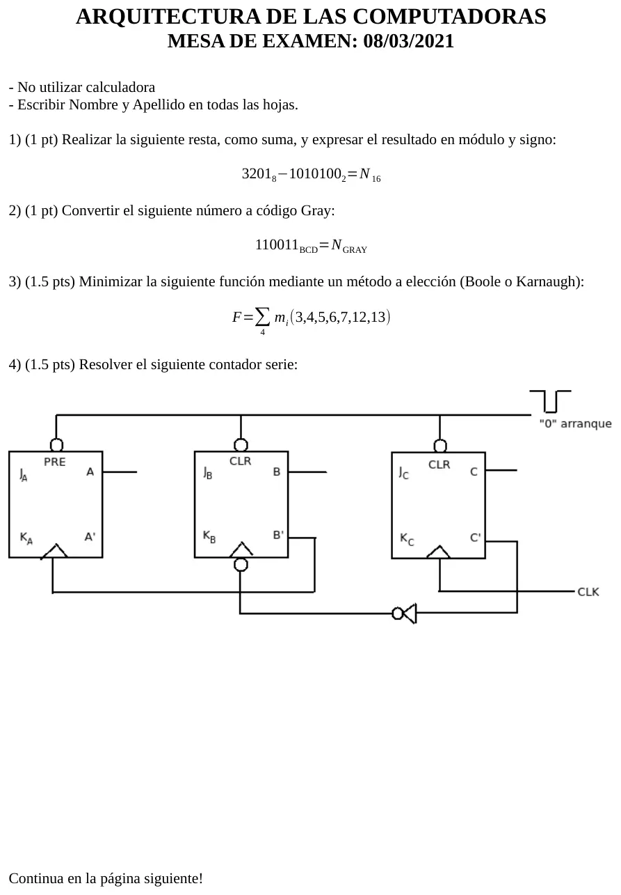
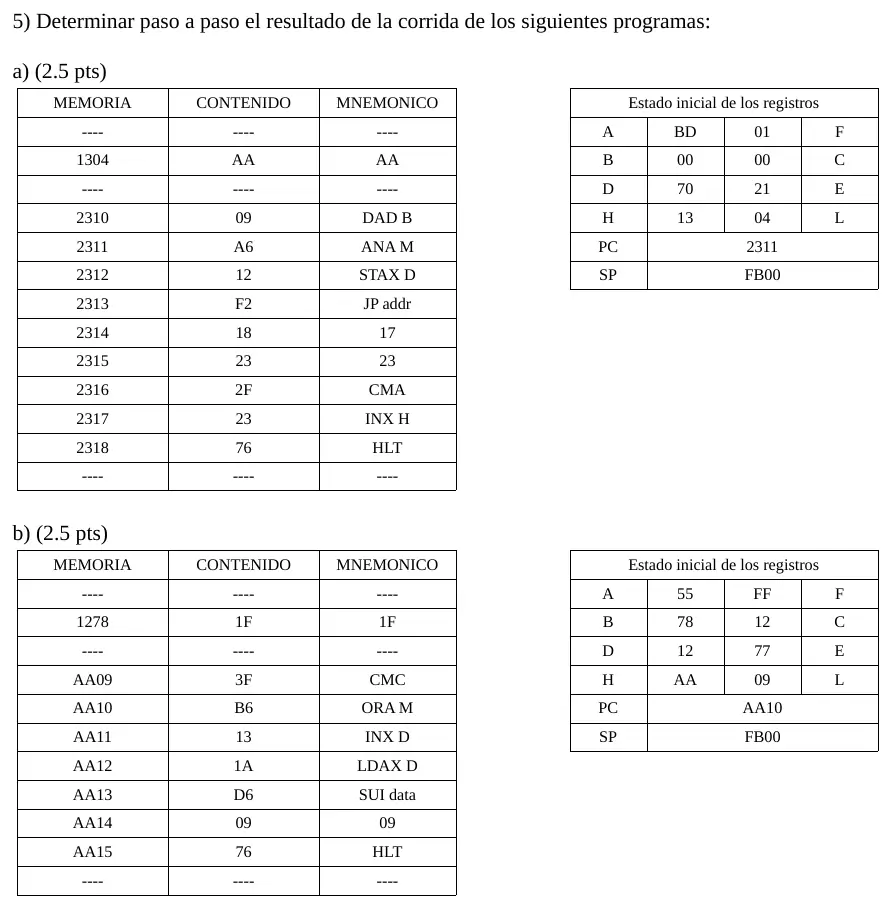

Final, 08/03/2021 (práctica)
Final, 08/03/2021
Este examen es de 2022 o antes, del plan anterior. Puede no coincidir con lo que se toma hoy.
Enunciado




Preguntas con opciones
Salen de este examen, algunas adaptadas. Dejalas para el final, porque las opciones pueden dar pistas.
- 1
¿Cuándo se considera que un programa está activo?
Se tomó: Mesa de teoría 08/03/2021 Plan viejo
Un programa solo puede usarse si está en la memoria principal. Los datos de un disco no son activos mientras no se los cargue.
- 2
¿De qué se compone el chipset?
Se tomó: Mesa de teoría 08/03/2021 Plan viejo
El chipset vincula la CPU con las unidades de E/S. El puente norte maneja la memoria y el sur el bus de datos.
- 3
¿Cuándo se considera que un programa está activo?
Se tomó: Mesa de teoría 08/03/2021 Plan viejo
Un programa solo puede usarse si está en la memoria principal.
- 4
Un procesador multi-core tiene...
Se tomó: Mesa 08/03/2021, adaptada Plan viejo
Cada núcleo tiene su caché L2 y comparten la memoria principal.
- 5
¿Qué maneja el puente norte del chipset?
Se tomó: Mesa de teoría 08/03/2021 Plan viejo
El norte maneja la memoria y el sur el bus de datos.
¿Cómo te fue?
Marcá cada tema del examen. Las preguntas con opciones ya se corrigieron solas.
- Resta como sumaResta como suma, en 1° parcial
- GrayCómo viene el examen, en 1° parcial
- MinimizaciónMinimización, en 1° parcial
- Contador serieContador serie, en 2° parcial
- Programas 8085Programas con el microprocesador Intel 8085, en 2° parcial